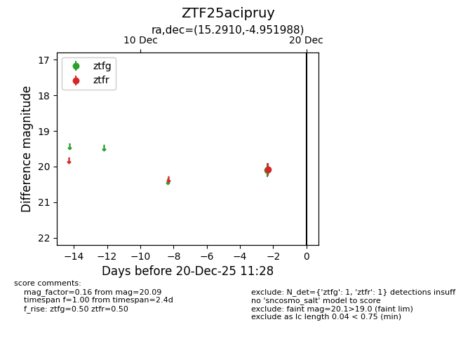
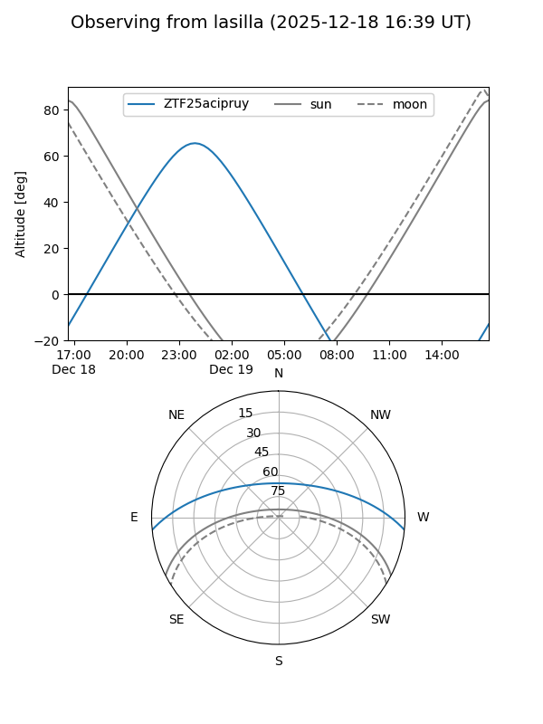
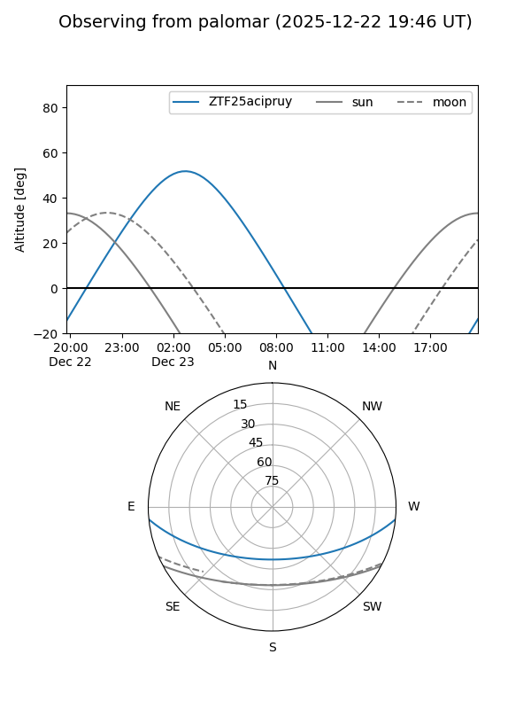
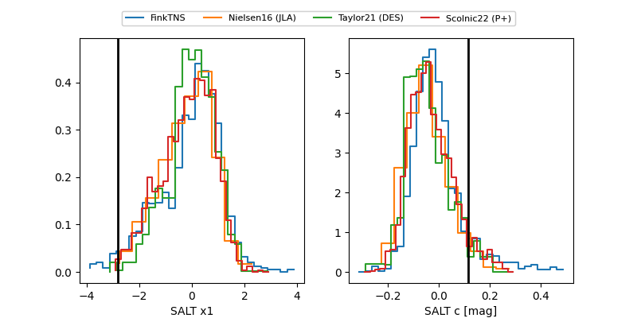

ZTF25acipruy
Target ZTF25acipruy at 2025-12-20 11:30
Aliases and brokers:
FINK: fink-portal.org/ZTF25acipruy
Lasair: lasair-ztf.lsst.ac.uk/objects/ZTF25acipruy
ALeRCE: alerce.online/object/ZTF25acipruy
alt names
ZTF25acipruy (ztf,fink_ztf)
Coordinates:
equatorial (ra, dec) = 15.2910,-4.95199
equatorial (HMS+DMS) = 01:01:09.84,-04:57:07.16
galactic (l, b) = (129.3280,-67.70287)
Flags:
Photometry:
last ztfg=20.10, ztfr=20.09
1 ztfg, 1 ztfr detections
Lightcurve

Visibility


Additional plots
